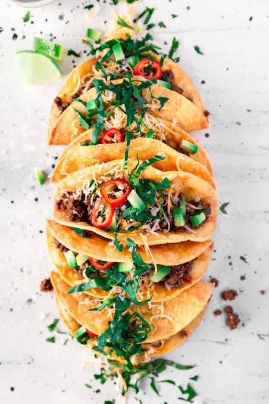
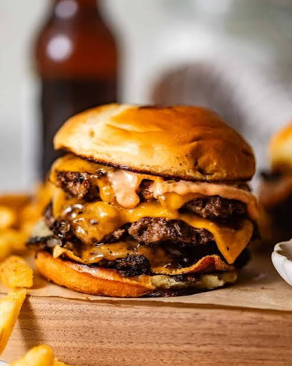
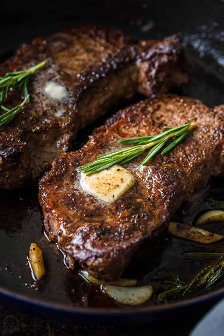
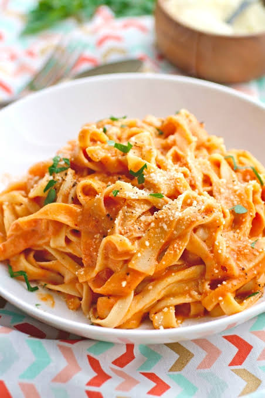
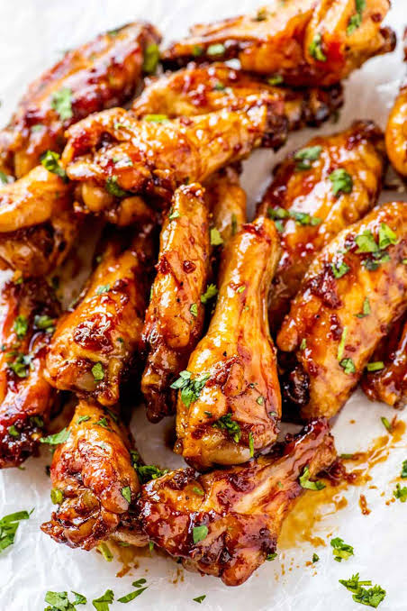

Hunter's Favorite Things to Cook
I have always enjoyed cooking, especially when I get the chance to try something new. These are six of my favorite foods to make at home. Some are simple, some take a little more work, but they are all things I genuinely enjoy making for myself, my family, and friends.

Homemade Pizza
Pizza | Homemade | Favorite
Pizza is one of my favorite things to make because I can change it up every time. I enjoy making the dough, choosing different toppings, and trying to get it as close as possible to a restaurant-style pizza at home.

Tacos
Tacos | Homemade | Favorite
Tacos are one of my go-to meals because there are so many different ways to make them. I like experimenting with different meats, seasonings, toppings, and sauces depending on what sounds good that day.

Smash Burgers
Burgers | Homemade | Griddle
Smash burgers are one of my favorites because they are simple to make but always turn out great. I like getting a good crust on the patties and keeping the toppings simple with cheese, pickles, onions, and a good burger sauce.

Steak
Steak | Homemade | Cast Iron
Steak is one of my favorite meals to cook when I want something a little nicer. I enjoy trying to get the perfect sear while keeping the inside cooked just right, then finishing it with butter and seasoning.

Pasta
Pasta | Homemade | Comfort Food
Pasta is one of my favorite things to cook because there are so many different ways to make it. I enjoy trying different sauces, adding different proteins, and making an easy meal that always turns out good.

Chicken Wings
Wings | Homemade | Crispy
Chicken wings are one of my favorite things to make, especially when watching football. I like getting them as crispy as possible and trying different sauces and seasonings depending on what I am in the mood for.